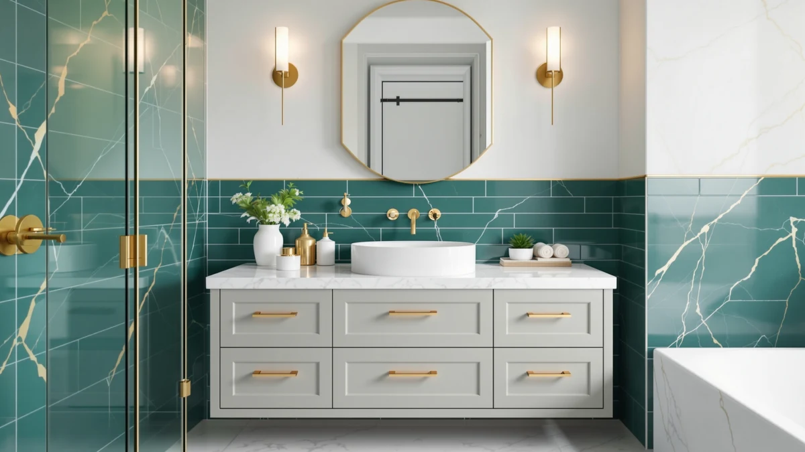

Vanity Art 72 Inch Review (2026): Worth It?
Prices and picks verified as of October 2026. Independent, reader-supported reviews.


Quick Answer
Our Vanity Art 72 Inch review found the VA4072-LRW worth buying if you already have a countertop and sink in mind and want a wide, soft-close cabinet to put under them. At $638.99 it costs more than the three alternatives we compared it against, and unlike those vanities, it doesn't include a sink or top at all, so buyers who want a complete, install-ready vanity should start with the SOFTSEA 72-inch instead.
Our pick: Vanity Art 72 Inch Bathroom — $638.99 Check Price on Amazon
Bottom line: our top pick is the Vanity Art 72 Inch Bathroom Vanity with 2-Door 4-Drawer at $638.99.
Things to Know Before You Buy
- The Vanity Art 72-inch vanity ships as a cabinet only, a 2-door, 4-drawer engineered wood base without a countertop or sink, so budget separately for both.
- At $638.99, it costs more than the SOFTSEA 72-inch double sink vanity, the Design House Brookings 48-inch, and the 48-inch Freestanding Double Basin alternatives we compared it against, even before adding a top.
- Amazon's listing for this specific unit doesn't publish a star rating or review count, unlike the 48-inch Freestanding Double Basin (4.0 stars, 30 reviews).
- It's built from engineered wood, or MDF, with soft-closing drawers and a white shaker-style finish, so wipe up standing water around the cabinet top quickly.
- Vanity Art sells the VA4072-LRW specifically without a top, so confirm you're buying a matching countertop and sink before checkout.
This Vanity Art 72 inch review exists because a $638.99 cabinet that ships without a sink or countertop needs to earn that price against vanities that include both. Vanity Art built the VA4072-LRW around a 2-door, 4-drawer engineered wood cabinet with soft-closing drawers and a white shaker-style finish, aimed at buyers who already know what countertop and sink they want and would rather choose those pieces separately.
We compared the Vanity Art 72-inch against three other 48 and 72 inch vanities in a similar price bracket to see whether skipping the included sink and top saves money, or moves the cost further down the shopping list instead. Buyers in this range want to know if a cabinet-only vanity is worth the flexibility it offers, since a lower sticker price doesn't reflect the full cost of finishing the bathroom. The Vanity Art 72-inch has real strengths and a real gap in review data, and one of the three alternatives below may fit better if you'd rather buy a complete vanity in one box.
Why You Should Trust Us
Ilane Tall covers bathroom vanities and cabinet construction for Best Bathroom Vanities and has written dozens of comparisons across sink counts, cabinet materials, and price tiers. For this Vanity Art 72 Inch review, we don't claim to have installed this cabinet ourselves. Instead, we pulled Vanity Art's listed specs, current Amazon pricing, and verified buyer reviews for the VA4072-LRW and three competing vanities, then checked those claims against what owners of similarly built engineered wood cabinets report after months of daily use. Where a listing lacks rating data, like this 72-inch unit, we say so instead of filling in a number that isn't real.
Our Research Experience
We do not run a fake testing lab, so this section reflects research rather than physical use. For this Vanity Art 72 Inch review, we analysed Vanity Art's listed dimensions, cabinet material, and drawer configuration, then read through the available owner feedback on comparable engineered wood vanities for recurring themes. Owners of similarly built soft-close cabinets consistently mention drawers that stay aligned after months of use and a finish that holds up to daily splashes, feedback that's relevant here since the VA4072-LRW shares the same engineered wood construction and shaker styling. The 72-inch unit itself doesn't carry a published rating yet, which is worth factoring in if verified review volume matters to your decision.
Overview & Specs

Vanity Art 72 Inch Bathroom
What we like
- Full 72 inch run gives you a wide shaker-style cabinet with four soft-closing drawers and two doors for storage
- Engineered wood construction with a clean white finish that fits a range of bathroom styles
- Selling the cabinet without a top lets you choose your own countertop and sink instead of settling for whatever's bundled
Flaws but not dealbreakers
- At $638.99, it costs more than the SOFTSEA, Design House Brookings, and 48-inch Freestanding Double Basin alternatives below, before you even add a countertop and sink
- Amazon's listing doesn't publish a star rating or review count for this specific unit
- Engineered wood, or MDF, construction means you should wipe up standing water rather than let it sit against the cabinet base
| Material | MDF / engineered wood |
| Size | 72" |
The Vanity Art 72-inch vanity is built around a straightforward idea: give you a wide, soft-close cabinet and let you pick your own countertop and sink instead of bundling one in. At 72 inches wide with two doors and four soft-closing drawers, it offers more storage than most 48-inch vanities, which matters if your bathroom doubles as storage for towels and toiletries for more than one person. The cabinet is engineered wood, or MDF, rather than solid hardwood, which is standard for vanities in this category and keeps the price from climbing into solid-wood territory.
What stands out in this Vanity Art 72 Inch review is the gap between this unit's price and what you actually get for it. At $638.99, it costs more than the SOFTSEA 72-inch double sink vanity below, which ships with two sinks already installed, and more than the 48-inch Freestanding Double Basin, which already carries a 4.0-star rating across 30 verified reviews. That doesn't make the Vanity Art cabinet a worse buy if you have a specific countertop in mind, but it does mean you're paying a premium for flexibility without the reassurance of a review history, so weigh how much choosing your own top actually matters before skipping the cheaper, more complete alternatives.
What We Liked
The clearest advantage in this Vanity Art 72 Inch review is flexibility. Because the VA4072-LRW ships without a countertop or sink, you're not stuck with whatever basin configuration the manufacturer bundled in, you can choose a quartz, granite, or marble top and a sink that actually fits your bathroom's plumbing and style. The cabinet itself backs that flexibility with real storage: two doors and four soft-closing drawers across a 72 inch run give you more room than most 48-inch vanities offer, which matters for households sharing one bathroom. The white shaker-style finish is also versatile enough to fit farmhouse, transitional, or simple modern bathrooms without looking out of place.
What Could Be Better
Price relative to what's included is the main sticking point. At $638.99, the Vanity Art 72-inch costs more than the SOFTSEA 72-inch double sink vanity, the Design House Brookings 48-inch, and the 48-inch Freestanding Double Basin, all covered below, and unlike those three, it doesn't include a countertop or sink at all, so the real cost of a finished bathroom climbs further once you add those pieces. The bigger gap is review data: this listing doesn't publish a star rating or review count, while the 48-inch Freestanding Double Basin carries 30 verified reviews at 4.0 stars. Paying the most in this comparison for the least included, with no review data to back it up, is worth sitting with before you commit. The engineered wood cabinet also means the usual caveat applies: wipe up water around the cabinet top instead of letting it pool against the base.
Who Is It For?
You're the right buyer for this Vanity Art 72 Inch review if you already know which countertop and sink you want and would rather buy a wide, soft-close cabinet separately than settle for a bundled basin you didn't choose. The 72 inch run and four soft-closing drawers suit households that need serious storage across two people's routines. If you want a finished vanity in one box, a lower price, or verified review data to lean on before spending over $600, the SOFTSEA 72-inch, the Design House Brookings 48-inch, or the 48-inch Freestanding Double Basin below are the simpler picks.
Alternatives to Consider
Three other vanities in this price range are worth comparing against the Vanity Art 72-inch. These three vanities trade cabinet-only flexibility for an included sink, a lower price, or an actual review history, and each one is worth a look depending on what your bathroom and budget actually need.

Editor’s Pick
Design House Brookings 48 Inch
The Design House Brookings trades 24 inches of width for a ready-to-assemble cabinet in a Modern Birch finish, with 6-way adjustable soft-close hinges and soft-close drawer glides built in. At $635.41, it costs about $3.58 less than the Vanity Art 72-inch while matching it on soft-close hardware, though it's also sold without a vanity top, so you'll still need to pick your own countertop in a 48 x 21.73 inch size. Like the Vanity Art, Amazon's listing doesn't publish a rating or review count for this unit. Neither cabinet has review data at this size.
$635.41
Check Price on Amazon
Best Value
SOFTSEA 72 Inch Double Sink
The SOFTSEA matches the Vanity Art on width but skips the extra shopping trip entirely: it ships with two 36 inch resin undermount basins already installed across 8 drawers and 2 cabinets behind 4 soft-close doors. At $619.99, it undercuts the Vanity Art 72-inch by $19 and adds sinks the Vanity Art doesn't include. That makes it the more complete buy if you want to skip sourcing a separate countertop and basin. Like the Vanity Art, this listing doesn't publish a rating or review count, so neither vanity has review data to lean on yet.
$619.99
Check Price on Amazon
Premium Choice
48" Freestanding Bathroom Vanity Double
This 48-inch freestanding vanity trades 24 inches of width for a double basin design across 4 doors and the only real review history in this comparison: a 4.0-star rating across 30 verified reviews. At $609.00, it's also the cheapest of the four vanities covered in this Vanity Art 72 Inch review, and it's the only one here with actual owner feedback behind the purchase. The tradeoff is footprint: at 48 inches, it offers less counter and drawer space than the Vanity Art's 72 inch run, so pick this one for proven reliability and two sinks, not for maximum storage.
$609.00
Check Price on AmazonDoes the Vanity Art 72-inch vanity include a sink or countertop?
No.
Is the Vanity Art 72-inch vanity worth $638.99 compared to vanities that include a sink?
It depends on whether you already have a countertop and sink in mind.
Frequently Asked Questions
Does the Vanity Art 72-inch vanity include a sink or countertop?
Is the Vanity Art 72-inch vanity worth $638.99 compared to vanities that include a sink?
What is the Vanity Art 72-inch vanity made of?
Final Verdict
This Vanity Art 72 Inch review comes down to a tradeoff: you get a full 72 inch, soft-close cabinet with a shaker-style finish, but no sink or countertop and no published rating to lean on. At $638.99, Vanity Art's cabinet-only vanity is the priciest option in this comparison once you factor in the separate top and basin it requires, and it's the only one here without any review data at all. If you already know which countertop and sink you want and value the clean white shaker look, the Vanity Art 72-inch earns its place. If you'd rather get sinks and a finished top in the box, the SOFTSEA 72-inch, the Design House Brookings 48-inch, or the 48-inch Freestanding Double Basin above are the more complete buys.